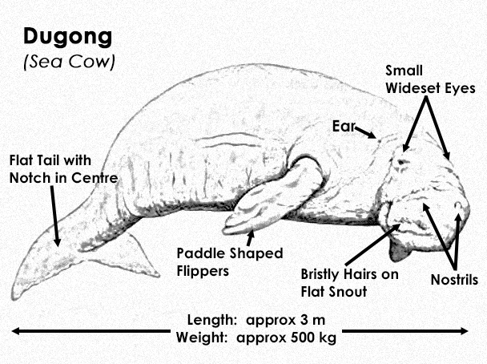
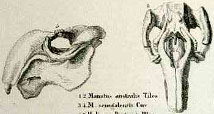
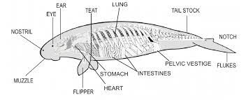
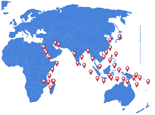
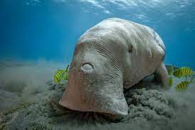
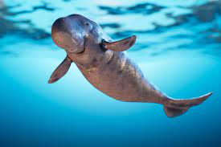

Der Dugong ist ein Meeressäugetier. Er wird auch selten als Gabelschwanzseekuh oder
Seeschwein bezeichnet und ist der einzige heute noch lebende Vertreter der
Gabelschwanzseekühe bzw. Dugongidae. Zusammen mit den Rundschwanzseekühen
oder Manatis bilden sie die Ordnung der Seekühe (Sirenia).
Hier ist ein Video, welches kurz erklärt, was Dugongs sind und welche Bedeutung sie
für unsere Meere haben:
Steckbrief
Wissenschaftlicher Name der Gattung:
Dugong
Wissenschaftlicher Name der Art:
Dugong Dugon
Klasse:
Säugetiere
Ordnung:
Seekühe
Familie:
Gabelschwanzseekühe
Grösse:
3m - 4m
Gewicht:
230kg - 900kg
Alter:
über 60 Jahre alt
Aussehen:
zylinderförmiger Körper
halbmondförmige Schwanzflosse
glatte, braune bis dunkelgraue Haut
großer Kopf mit einer abgesetzten Schnauze
und harte Tasthaare
kleine Augen
Ohren äußerlich nicht sichtbar
Ernährungstyp:
Pflanzenfresser, Vegetarier
Nahrung:
Algen, Seegras, Wasserpflanzen
Schlaf-Wach-Rhythmus:
tagaktiv
Lebensraum:
in Ufernähe von Flüssen und Gewässern,
Tropisches Klima, Salzwasser
Natürliche Feinde:
grundsätzlich keine, werden aber trotzdem von
Schwertwalen und Haien attackiert
Geschlechtsreife:
tritt um das zehnte Lebensjahr ein
Paarungszeit:
4 - 5 Monate
Tragzeit:
12 - 14 Monate
Wurfgrösse:
meistens 1 Jungtier
Sozialverhalten:
Familienverband / Einzelgänger
Vom Aussterben Bedroht:
Ja
In diesem Video werden die wichtigsten Fakten zusammengefasst:
Hier gibt es noch einen tollen Steckbrief allgemein zu den Seekühen: Seekuh-steckbrief.php
Anatomie und Morphologie
Funktion von Körperteilen

Der Dugong wird drei bis vier Meter lang und erreicht ein Gewicht von 230 bis 900
Kilogramm. Die Weibchen sind etwas größer als die Männchen. Die glatte, braune bis
dunkelgraue Haut des Dugong weist in Abständen von zwei bis drei Zentimetern kurze
Tasthaare auf. Die 35 bis 45 Zentimeter langen Vorderflossen werden von den
Jungtieren zur Fortbewegung bzw. zum Antrieb genutzt. Die adulte Tiere verwenden die
sogenannten Flipper fast ausschließlich zum Lenken und überlassen den Antrieb der
Schwanzflosse. Die Flipper werden außerdem beim Grasen zum „Abstützen“ auf dem
Grund verwendet und nicht zum Prüfen der Nahrung, wie es Tiere in Gefangenschaft
taten. Die Schwanzflosse ist nach innen gewölbt und halbmondförmig. Die Schnauze ist
kurz, breit und abgesetzt und durch abwärts gebogene, bewegliche Unterlippen sowie
ein schlitzförmiges Maul gekennzeichnet.
Schädel und Gebiss

Das Praemaxillare bildet ein abgeknicktes, auffallendes Rostrum, flankiert von sehr
robusten Jochbögen, die die Ansatzfläche für den Kaumuskel bilden. Das Nasenbein
fehlt beim Dugong. Das Gebiss des Dugong ist charakteristisch. Bei den Männchen
bildet sich ein Schneidezahn, welcher im neunten bis zehnten Lebensjahr (in der
Pubertät) durchbricht und einen Stoßzahn bildet, bei Weibchen jedoch im Zahnfach
bleibt. Die Backenzähne sind zylinderförmig und dick. Sie haben keine Wurzeln und
keinen Zahnschmelz. Der letzte Backenzahn ist doppelzylinderförmig. Bei Jungtieren
fehlen je Kieferhälfte zwei Molaren, die spät durchbrechen und beständig wachsen. Die
Jungtiere verfügen überdies noch über ein paar Prämolaren, welche jedoch mit
zunehmendem Alter weiter nach vorne im Kiefer wandern, wo sie durch den Verschleiß
letztendlich verschwinden.
Skelett und Knochen

Der Dugong hat sieben Halswirbel, 18 bis 19 Brustwirbel (eine relativ hohe Anzahl), vier
bis fünf Lendenwirbel (eine eher geringe Anzahl), höchstens einen Sakralwirbel und 28
bis 29 Schwanzwirbel. Das Schulterblatt ist sichelförmig. Das Brustbein ist reduziert,
ebenso der Beckengürtel. Das Schlüsselbein und auch das Schambein sind nicht
vorhanden beim Dugong. Das Coracoid ist gut ausgebildet. Die Handwurzelknochen
zeigen beim Dugong eine Tendenz zur Verschmelzung.
Im 2. Abschnitt wird die Morphologie sehr gut erklärt:
Vorkommen

Der Dugong hält sich fast ausschließlich im Salzwasser auf. Wie die meisten Seekühe
bewohnt auch der Dugong eher flache Küstengewässer, die meist recht trüb sind.
Einzelne Dugongs können mehrere hundert Kilometer in wenigen Tagen zurücklegen
und dabei die Küstengewässer vieler Länder durchschwimmen. Alle Seekühe
durchstreifen bzw. durchschwimmen ihr Revier sehr bedächtig und aufmerksam. Dieses
Revier kann über 40 km² groß sein. Die in kalten Gewässern lebenden Dugongs ziehen
im Winter in wärmere Gebiete. Dugongs sind an den Küsten des indischen Ozeans und
Teilen des Westpazifiks verbreitet. Sein heutiges Verbreitungsgebiet umfasst die Küsten
von je nach Quelle 40 bis 48 Ländern. Dugongs sind hauptsächlich durch wenige
Sichtungen, Erzählungen von Seeleuten oder von gefundenen ertrunkenen Tieren
bekannt. In historischen Zeiten waren Dugongs fast in allen seegrasbewachsenen
indopazifischen Gewässern verbreitet. Den antiken Ägyptern können sie vom Roten
Meer her bekannt gewesen sein. Hin und wieder werden einige wenige Dugongs im
Mittelmeer nachgewiesen, wobei sich diese Tiere durch den künstlichen Suez-Kanal in
das Mittelmeer begeben haben
Besondere Eigenschaften
Sinnesleistung

Auch wenn die Ohren nicht sichtbar sind, haben Dugongs ein sehr gut ausgeprägtes
Gehör. Sie nehmen damit sogar Ultraschallwellen wahr. Der Sehsinn hingegen ist wenig
ausgebildet. Dugongs haben einen guten Geschmackssinn. Ihre Zunge ist mit vielen
Geschmacksknospen ausgestattet. Der Tastsinn ist sehr wichtig für die Dugongs, da sie
mit ihren Lippen und Tasthaaren ihre nähere Umgebung erkunden.
Verhalten, Feinde und Eigenschaften
Dugongs sind eher scheu und fliehen bei jeder Störung. Da beim Atmen nur
Kopfoberseite und Nasenöffnungen aus dem Wasser gehoben werden, sind sie auch
nicht gut zu sehen. Allerdings kann es sein, dass bei sehr klarem Wasser ein Dugong
aus oft mehr als 100 Metern Entfernung an ungefährlich erscheinende Taucher oder
Schiffe heranschwimmt, da er diese untersuchen will. Gelegentlich gibt es Tiere, die
direkten Kontakt mit Tauchern suchen und stundenlang mit ihnen spielen. Nachdem die
Neugier befriedigt ist, schwimmt der Dugong im Zickzack davon, wahrscheinlich, um
das eben untersuchte Objekt mit jeweils einem Auge im Blick behalten zu können.

Die Neugier der Dugongs lässt darauf schließen, dass sie speziell als ausgewachsene Tiere
kaum natürliche Feinde haben, obwohl davon berichtet wird, das selbst große Dugongs
von Schwertwalen und Haien attackiert wurden. Außer durch ihre Größe werden
Dugongs auch durch eine robuste Haut, eine dichte Knochenstruktur und ein stärker
gerinnungsfähiges Blut geschützt, das Wunden schnell verschließt. Dugongs können
sich mit ca. 10 km/h, in Eile etwa doppelt so schnell fortbewegen. Die Tiere atmen
während des Grasens alle 40 bis 400 Sekunden. Mit zunehmender Tiefe steigt auch die
Dauer des Atemintervalles. Manchmal schauen sie sich während des Atmens um. Meist
ragen nur die Nasenlöcher aus dem Wasser. Oft stoßen sie beim Ausatmen einen Laut
aus, der lautmalerisch mit „p-haa“ ausgedrückt werden könnte und recht weit gehört
werden kann.
Noch ein lustiges Lied über Dugongs:
Für weitere Informationen über Dugongs gehen Sie auf folgende Seiten (Quellen):
 Dugongs sind eher scheu und fliehen bei jeder Störung. Da beim Atmen nur
Kopfoberseite und Nasenöffnungen aus dem Wasser gehoben werden, sind sie auch
nicht gut zu sehen. Allerdings kann es sein, dass bei sehr klarem Wasser ein Dugong
aus oft mehr als 100 Metern Entfernung an ungefährlich erscheinende Taucher oder
Schiffe heranschwimmt, da er diese untersuchen will. Gelegentlich gibt es Tiere, die
direkten Kontakt mit Tauchern suchen und stundenlang mit ihnen spielen. Nachdem die
Neugier befriedigt ist, schwimmt der Dugong im Zickzack davon, wahrscheinlich, um
das eben untersuchte Objekt mit jeweils einem Auge im Blick behalten zu können.
Dugongs sind eher scheu und fliehen bei jeder Störung. Da beim Atmen nur
Kopfoberseite und Nasenöffnungen aus dem Wasser gehoben werden, sind sie auch
nicht gut zu sehen. Allerdings kann es sein, dass bei sehr klarem Wasser ein Dugong
aus oft mehr als 100 Metern Entfernung an ungefährlich erscheinende Taucher oder
Schiffe heranschwimmt, da er diese untersuchen will. Gelegentlich gibt es Tiere, die
direkten Kontakt mit Tauchern suchen und stundenlang mit ihnen spielen. Nachdem die
Neugier befriedigt ist, schwimmt der Dugong im Zickzack davon, wahrscheinlich, um
das eben untersuchte Objekt mit jeweils einem Auge im Blick behalten zu können.